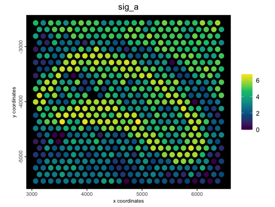
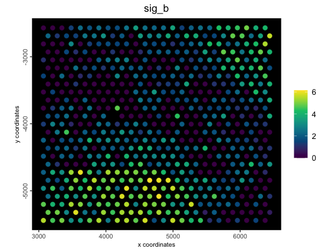
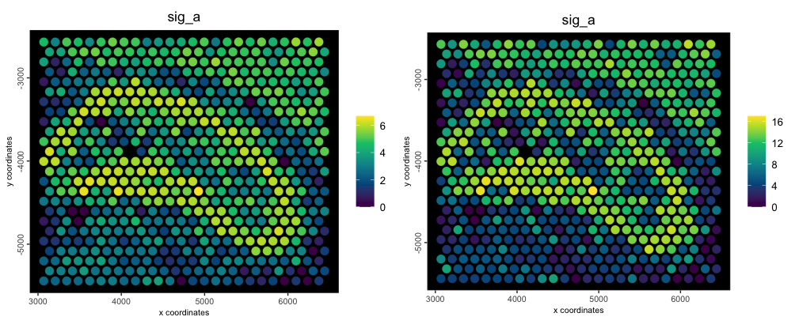
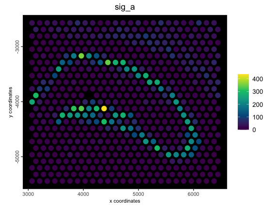
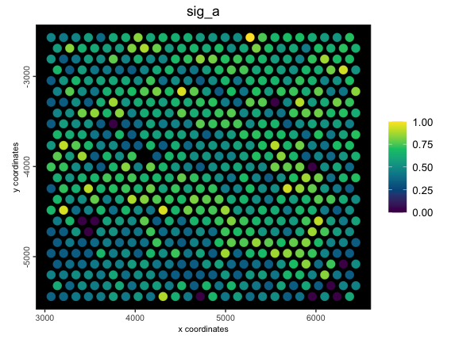
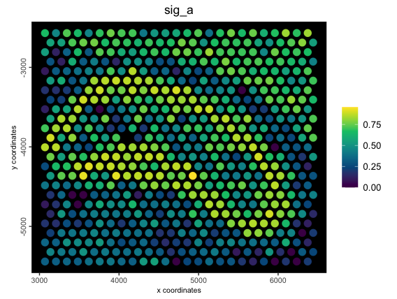

Metafeatures are statistical summary features that can be calculated to show the combined expression of a set of genes. They can be handy for displaying a gene signature.
1 Setup and load an example dataset
# Ensure Giotto Suite is installed
if(!"Giotto" %in% installed.packages()) {
pak::pkg_install("giotto-suite/Giotto")
}
# Ensure Giotto Data is installed
if(!"GiottoData" %in% installed.packages()) {
pak::pkg_install("giotto-suite/GiottoData")
}
library(Giotto)
# load a dataset
g <- GiottoData::loadGiottoMini("vis")
# some spatially organized genes
feats_to_use <- c("Neurod2", "Ptk2b", "Camkv",
"Cpne9", "Synopo2", "Pdp1")2 Metafeature creation
Metafeatures can be created from data.frame-like
objects. These tables must use the following colnames:
-
clus- name of metafeature -
feat- features to assign to this metafeature -
w- (optional) weight to assign the feature before metafeature score calculation
The mean value of the provided features is the default statistic used when calculating the score.
2.1 Creation of basic metafeature
clust_to_use1 <- data.frame(
clus = c(rep("sig_a", 3), rep("sig_b", 3)),
feat = feats_to_use
)
force(clust_to_use1) clus feat
1 sig_a Neurod2
2 sig_a Ptk2b
3 sig_a Camkv
4 sig_b Cpne9
5 sig_b Synopo2
6 sig_b Pdp1
g <- createMetafeats(
gobject = g,
feat_clusters = clust_to_use1,
name = "metagene_1"
)
g[["spatial_enr", "metagene_1"]][[1]]An object of class spatEnrObj : "metagene_1"
spat_unit : "cell"
feat_type : "rna"
provenance: cell
------------------------
preview:
sig_a sig_b cell_ID
<num> <num> <char>
1: 1.765460 1.891517 AAAGGGATGTAGCAAG-1
2: 5.318566 2.440581 AAATGGCATGTCTTGT-1
3: 1.563614 4.988089 AAATGGTCAATGTGCC-1
# example plot
spatPlot2D(g,
cell_color = "sig_a",
color_as_factor = FALSE,
point_size = 4,
gradient_style = "sequential",
background = "black",
spat_enr_names = "metagene_1"
)
spatPlot2D(g,
cell_color = "sig_b",
color_as_factor = FALSE,
gradient_style = "sequential",
background = "black",
spat_enr_names = "metagene_1"
)
2.2 Creation of metafeature with weighted input features
# annotation data.frame (weights)
clust_to_use2 <- data.frame(
clus = c(rep("sig_a", 3), rep("sig_b", 3)),
feat = feats_to_use,
w = c(5, 1, 2, 2, 3, 4)
)
force(clust_to_use2) clus feat w
1 sig_a Neurod2 5
2 sig_a Ptk2b 1
3 sig_a Camkv 2
4 sig_b Cpne9 2
5 sig_b Synopo2 3
6 sig_b Pdp1 4
g <- createMetafeats(
gobject = g,
feat_clusters = clust_to_use2,
name = "weighted_metagene"
)
p1 <- spatPlot2D(g,
cell_color = "sig_a",
color_as_factor = FALSE,
point_size = 4,
spat_enr_names = "metagene_1",
gradient_style = "sequential",
background = "black",
return_plot = TRUE
)
p2 <- spatPlot2D(g,
cell_color = "sig_a",
color_as_factor = FALSE,
point_size = 4,
spat_enr_names = "weighted_metagene",
gradient_style = "sequential",
background = "black",
return_plot = TRUE
)
cowplot::plot_grid(p1, p2)
Original (left) vs weighted metafeatures (right)2.3 Alternative stat to calculate
Defaults for stat calculation are: “mean”, “sum”, “max”, and “min”.
# Other statistic transforms can be calculated
# The default and what has been used so far is just finding the mean
g <- createMetafeats(
gobject = g,
feat_clusters = clust_to_use2,
stat = "sum",
expression_values = "raw", # find summed raw expr for these feats
name = "raw_sums"
)
spatPlot2D(g,
cell_color = "sig_a",
color_as_factor = FALSE,
point_size = 4,
spat_enr_names = "raw_sums",
gradient_style = "sequential",
background = "black",
return_plot = TRUE
)
2.4 Metafeature with custom statistical function
These custom functions must be summary functions, as in, they must
produce only a single numeric output from many. Here we make a
custom_stat function that finds the mean of each of the
features in the metafeature divided by the largest value of any of the
features per cell. This is all done on top of a weighted raw expression
values.
# setup custom stat function
custom_stat <- function(x) {
# catch div 0 cases
if (max(x) == 0) {
return(0)
}
return(mean(x / max(x)))
}
# generate metafeature with custom stat
g <- createMetafeats(
gobject = g,
feat_clusters = clust_to_use2,
stat = custom_stat,
expression_values = "raw",
name = "raw_custom"
)
spatPlot2D(g,
cell_color = "sig_a",
color_as_factor = FALSE,
point_size = 4,
spat_enr_names = "raw_custom",
gradient_style = "sequential",
background = "black",
return_plot = TRUE
)
2.5 Metafeature from rescaled inputs
A rescale of the values to a specified numeric range can also be applied before the stat score calculation.
g <- createMetafeats(
gobject = g,
feat_clusters = clust_to_use1,
stat = "mean",
expression_values = "normalized",
rescale_to = c(0, 1),
name = "norm_scaled_mean_metafeat"
)
spatPlot2D(g,
cell_color = "sig_a",
color_as_factor = FALSE,
point_size = 4,
spat_enr_names = "norm_scaled_mean_metafeat",
gradient_style = "sequential",
background = "black",
return_plot = TRUE
)
2.6 Simple metafeature creation from annotation vector
Metafeatures can also be defined with a simple named
numeric or character vector. The names should
be the features to use and the vector values define the metafeatures to
assign those features to.
# annotation vector (numeric)
clust_to_use3 <- c(1, 1, 1, 2, 2, 2)
names(clust_to_use3) <- feats_to_use
force(clust_to_use3)
g <- createMetafeats(
gobject = g,
feat_clusters = clust_to_use3,
name = "metagene_vec_num"
)
# annotation vector (character)
clust_to_use4 <- c(rep("sig_a", 3), rep("sig_b", 3))
names(clust_to_use4) <- feats_to_use
force(clust_to_use4)
g <- createMetafeats(
gobject = g,
feat_clusters = clust_to_use4,
name = "metagene_vec_char"
)R version 4.4.1 (2024-06-14)
Platform: aarch64-apple-darwin20
Running under: macOS Sonoma 14.4
Matrix products: default
BLAS: /System/Library/Frameworks/Accelerate.framework/Versions/A/Frameworks/vecLib.framework/Versions/A/libBLAS.dylib
LAPACK: /Library/Frameworks/R.framework/Versions/4.4-arm64/Resources/lib/libRlapack.dylib; LAPACK version 3.12.0
locale:
[1] en_US.UTF-8/en_US.UTF-8/en_US.UTF-8/C/en_US.UTF-8/en_US.UTF-8
time zone: America/New_York
tzcode source: internal
attached base packages:
[1] stats graphics grDevices utils datasets methods base
other attached packages:
[1] Giotto_4.1.3 GiottoClass_0.4.0
loaded via a namespace (and not attached):
[1] RcppAnnoy_0.0.22 splines_4.4.1 later_1.3.2
[4] bitops_1.0-8 tibble_3.2.1 R.oo_1.26.0
[7] polyclip_1.10-7 fastDummies_1.7.4 lifecycle_1.0.4
[10] sf_1.0-16 globals_0.16.3 lattice_0.22-6
[13] hdf5r_1.3.10 MASS_7.3-60.2 exactextractr_0.10.0
[16] backports_1.5.0 magrittr_2.0.3 plotly_4.10.4
[19] rmarkdown_2.28 yaml_2.3.10 httpuv_1.6.15
[22] Seurat_5.1.0 sctransform_0.4.1 spam_2.10-0
[25] spatstat.sparse_3.1-0 sp_2.1-4 reticulate_1.39.0
[28] DBI_1.2.3 cowplot_1.1.3 pbapply_1.7-2
[31] RColorBrewer_1.1-3 pkgload_1.3.4 abind_1.4-8
[34] zlibbioc_1.50.0 Rtsne_0.17 GenomicRanges_1.56.0
[37] purrr_1.0.2 R.utils_2.12.3 BiocGenerics_0.50.0
[40] RCurl_1.98-1.16 GenomeInfoDbData_1.2.12 IRanges_2.38.0
[43] S4Vectors_0.42.0 ggrepel_0.9.6 irlba_2.3.5.1
[46] spatstat.utils_3.1-0 listenv_0.9.1 terra_1.7-78
[49] units_0.8-5 goftest_1.2-3 RSpectra_0.16-2
[52] spatstat.random_3.3-2 fitdistrplus_1.2-1 parallelly_1.38.0
[55] leiden_0.4.3.1 colorRamp2_0.1.0 codetools_0.2-20
[58] DelayedArray_0.30.0 tidyselect_1.2.1 raster_3.6-26
[61] UCSC.utils_1.0.0 farver_2.1.2 ScaledMatrix_1.12.0
[64] matrixStats_1.4.1 stats4_4.4.1 spatstat.explore_3.3-2
[67] GiottoData_0.2.15 jsonlite_1.8.9 e1071_1.7-14
[70] progressr_0.14.0 ggridges_0.5.6 survival_3.6-4
[73] dbscan_1.2-0 tools_4.4.1 ica_1.0-3
[76] Rcpp_1.0.13 glue_1.8.0 gridExtra_2.3
[79] SparseArray_1.4.1 xfun_0.47 MatrixGenerics_1.16.0
[82] GenomeInfoDb_1.40.0 EBImage_4.46.0 dplyr_1.1.4
[85] withr_3.0.1 fastmap_1.2.0 fansi_1.0.6
[88] rsvd_1.0.5 digest_0.6.37 R6_2.5.1
[91] mime_0.12 colorspace_2.1-1 scattermore_1.2
[94] tensor_1.5 gtools_3.9.5 spatstat.data_3.1-2
[97] jpeg_0.1-10 R.methodsS3_1.8.2 utf8_1.2.4
[100] tidyr_1.3.1 generics_0.1.3 data.table_1.16.0
[103] FNN_1.1.4.1 class_7.3-22 httr_1.4.7
[106] htmlwidgets_1.6.4 S4Arrays_1.4.0 uwot_0.2.2
[109] pkgconfig_2.0.3 gtable_0.3.5 lmtest_0.9-40
[112] GiottoVisuals_0.2.5 SingleCellExperiment_1.26.0 XVector_0.44.0
[115] htmltools_0.5.8.1 dotCall64_1.1-1 fftwtools_0.9-11
[118] SeuratObject_5.0.2 scales_1.3.0 Biobase_2.64.0
[121] GiottoUtils_0.2.0 png_0.1-8 SpatialExperiment_1.14.0
[124] spatstat.univar_3.0-1 knitr_1.48 rstudioapi_0.16.0
[127] reshape2_1.4.4 rjson_0.2.21 nlme_3.1-164
[130] checkmate_2.3.2 proxy_0.4-27 zoo_1.8-12
[133] stringr_1.5.1 KernSmooth_2.23-24 parallel_4.4.1
[136] miniUI_0.1.1.1 pillar_1.9.0 grid_4.4.1
[139] vctrs_0.6.5 RANN_2.6.2 promises_1.3.0
[142] BiocSingular_1.20.0 beachmat_2.20.0 xtable_1.8-4
[145] cluster_2.1.6 evaluate_1.0.0 magick_2.8.4
[148] cli_3.6.3 locfit_1.5-9.9 compiler_4.4.1
[151] rlang_1.1.4 crayon_1.5.3 future.apply_1.11.2
[154] labeling_0.4.3 classInt_0.4-10 plyr_1.8.9
[157] stringi_1.8.4 BiocParallel_1.38.0 viridisLite_0.4.2
[160] deldir_2.0-4 munsell_0.5.1 lazyeval_0.2.2
[163] tiff_0.1-12 spatstat.geom_3.3-3 Matrix_1.7-0
[166] RcppHNSW_0.6.0 patchwork_1.3.0 bit64_4.5.2
[169] future_1.34.0 ggplot2_3.5.1 shiny_1.9.1
[172] SummarizedExperiment_1.34.0 ROCR_1.0-11 igraph_2.0.3
[175] bit_4.5.0